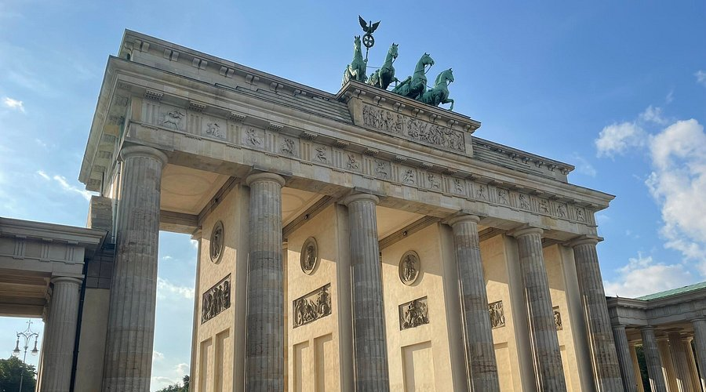

Top Tourist Places in Berlin

Brandenburg Gate
Berlin’s iconic neoclassical monument and symbol of unity, located at the heart of the city.

Berlin Wall – East Side Gallery
Colorful murals on remnants of the Berlin Wall tell the story of division and reunification.

Reichstag Building
The seat of the German parliament with a striking glass dome offering panoramic city views.

Museum Island
A UNESCO World Heritage Site housing five world-renowned museums in the heart of Berlin.

Berlin Cathedral
Berlin’s grand Protestant cathedral with a magnificent dome and crypt, located on Museum Island.

Charlottenburg Palace
A Baroque palace with lavish rooms, gardens, and rich Prussian royal history.